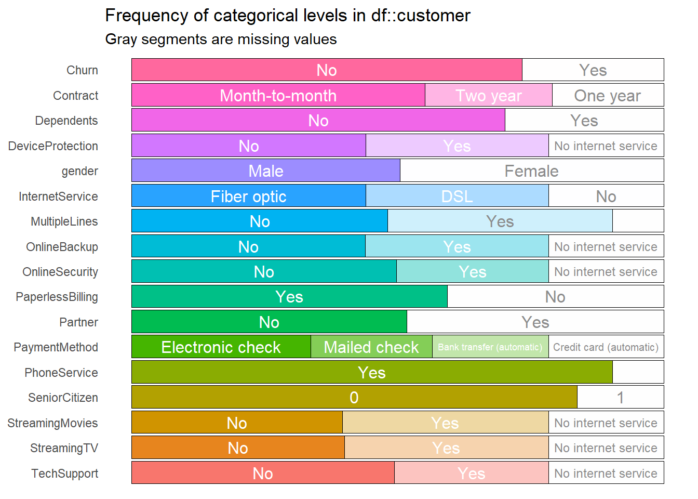
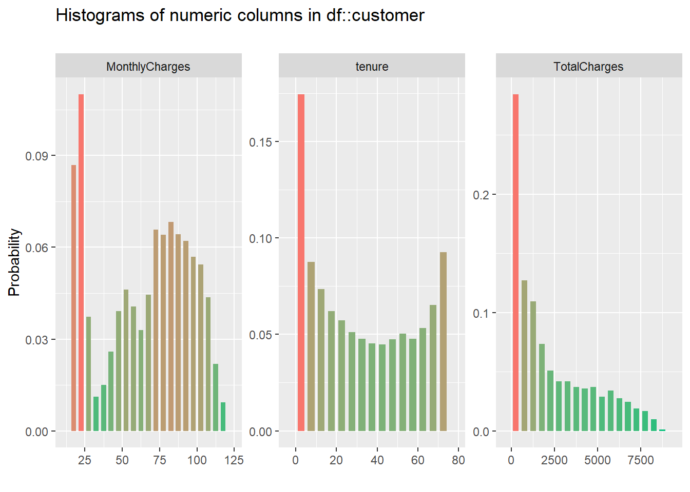
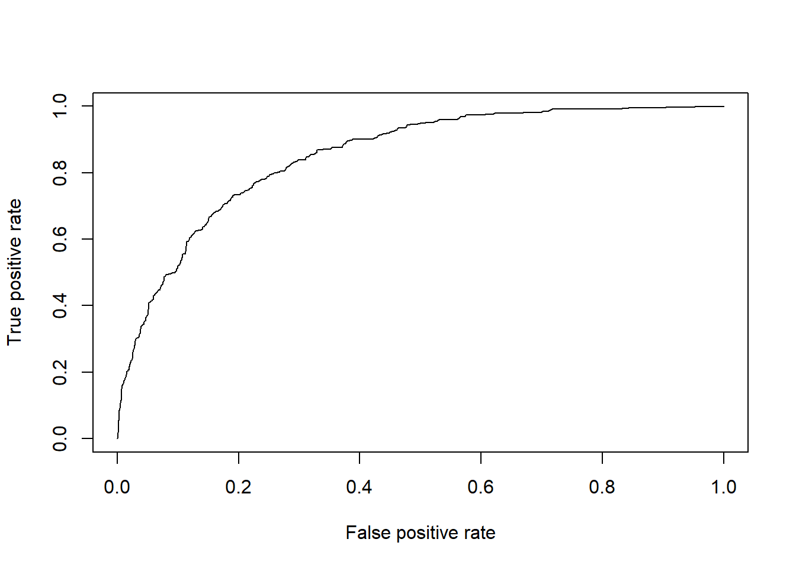
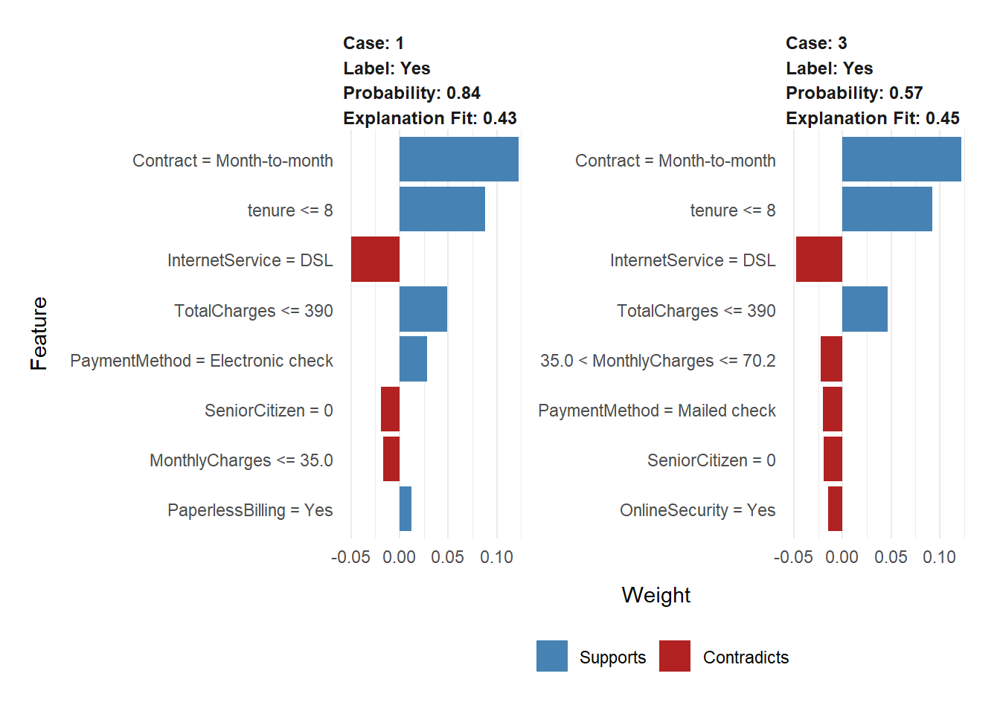

Corporate Portfolio
April 24, 2020
Bab 1 Telecommunication
1.1 Customer Churn Prediction
1.1.1 Background
Customer Churn didefinisikan sebagai kecenderungan pelanggan untuk berhenti melakukan interaksi dengan sebuah perusahaan. Perusahaan telekomunikasi memiliki kebutuhan untuk mengetahui customer yang akan berhenti berlangganan atau tidak, karena biaya mempertahankan pelanggan yang sudah ada jauh lebih sedikit dibandingkan memperoleh pelanggan baru. Perusahaan biasanya mendefinisikan 2 tipe customer churn, yaitu voluntary churn dan involuntary churn. Voluntary churn merupakan pelanggan yang sengaja berhenti dan beralih ke perusahaan lain, sedangkan involuntary churn merupakan pelanggan yang berhenti karena perpindahan lokasi, kematian, atau alasan lain yang sulit dikontrol. Analisis voluntary churn tentunya tidak sulit untuk mempelajari karakteristik pelanggan yang dapat dilihat dari data profil pelanggan. Permasalah diatas dapat dijawab dengan membuat model prediksi customer churn. Harapannya dengan adanya model prediksi customer churn, dapat mempermudah pihak perusahaan telekomunikasi untuk memperoleh informasi mengenai pelanggan yang berpeluang besar untuk churn.
1.1.2 Modelling Analysis
1.1.2.1 Import Data
Data yang digunakan merupakan data profil pelanggan perusahaan telekomunikasi yang diperoleh dar link berikut. Data tersebut berisikan 7043 observasi dengan 21 kolom. Target variabel pada data ini adalah Churn, kita akan memprediksi apakah pelanggan akan berhenti berlangganan produk atau akan tetep berlangganan.
#> customerID gender SeniorCitizen Partner Dependents tenure PhoneService
#> 1 7590-VHVEG Female 0 Yes No 1 No
#> 2 5575-GNVDE Male 0 No No 34 Yes
#> 3 3668-QPYBK Male 0 No No 2 Yes
#> 4 7795-CFOCW Male 0 No No 45 No
#> 5 9237-HQITU Female 0 No No 2 Yes
#> 6 9305-CDSKC Female 0 No No 8 Yes
#> MultipleLines InternetService OnlineSecurity OnlineBackup DeviceProtection
#> 1 No phone service DSL No Yes No
#> 2 No DSL Yes No Yes
#> 3 No DSL Yes Yes No
#> 4 No phone service DSL Yes No Yes
#> 5 No Fiber optic No No No
#> 6 Yes Fiber optic No No Yes
#> TechSupport StreamingTV StreamingMovies Contract PaperlessBilling
#> 1 No No No Month-to-month Yes
#> 2 No No No One year No
#> 3 No No No Month-to-month Yes
#> 4 Yes No No One year No
#> 5 No No No Month-to-month Yes
#> 6 No Yes Yes Month-to-month Yes
#> PaymentMethod MonthlyCharges TotalCharges Churn
#> 1 Electronic check 29.85 29.85 No
#> 2 Mailed check 56.95 1889.50 No
#> 3 Mailed check 53.85 108.15 Yes
#> 4 Bank transfer (automatic) 42.30 1840.75 No
#> 5 Electronic check 70.70 151.65 Yes
#> 6 Electronic check 99.65 820.50 YesBerikut ini merupakan deskripsi untuk setiap variabel:
CustomerID: Customer IDGender: Gender pelanggan yaitu Female dan MaleSeniorCitizen: Apakah pelanggan merupakan senio citizen (0: No, 1: Yes)Partner: Apakah pelanggan memiliki partner atau tidak (Yes, No)Dependents: Apakah pelanggan memiliki tanggungan atau tidak (Yes, No)Tenure: Jumlah bulan dalam menggunakan produk perusahaanMultipleLines: Apakah pelanggan memiliki banyak saluran atau tidak (Yes, No, No phone service)OnlineSecurity: Apakah pelanggan memiliki keamanan online atau tidakOnlineBackup: Apakah pelanggan memiliki cadangan online atau tidakDeviceProtection: Apakah pelanggan memiliki perlindungan perangkat atau tidakTechSupport: Apakah pelanggan memiliki dukungan teknis atau tidakStreamingTV: Apakah pelanggan berlangganan TV streaming atau tidakStreamingMovies: Apakah pelanggan berlangganan movies streaming atau tidakContract: Ketentuan kontrak berlangganan (Month-to-month, One year, Two year)PaperlessBilling: Apakah pelanggan memiliki tagihan tanpa kertas atau tidak (Yes, No)PaymentMethod: Metode pembayaran (Electronic check, Mailed check, Bank transfer (automatic), Credit card (automatic))MonthlyCharges: Jumlah pembayaran yang dilakukan setiap bulanTotalCharges: Jumlah total yang dibebankan oleh pelangganChurn: Apakah pelanggan Churn atau tidak (Yes or No)
1.1.2.2 Exploratory Data
Sebelum eksplorasi lebih lanjut, perlu diketahui kelengkapan data yang dimiliki:
#> customerID gender SeniorCitizen Partner
#> 0 0 0 0
#> Dependents tenure PhoneService MultipleLines
#> 0 0 0 0
#> InternetService OnlineSecurity OnlineBackup DeviceProtection
#> 0 0 0 0
#> TechSupport StreamingTV StreamingMovies Contract
#> 0 0 0 0
#> PaperlessBilling PaymentMethod MonthlyCharges TotalCharges
#> 0 0 0 11
#> Churn
#> 0Dari 7043 observasi ternyata terdapat missing values sebanyak 11 observasi pada kolom TotalCharges. Karena jumlah missing values cukup sedikit kita dapat membuat observasi tersebut. Selain itu, perlu kita buang variabel yang tidak dibutuhkan pada pemodelan yaitu customerID dan juga sesuaikan tipe data yang seharusnya.
customer <- customer %>%
select(-customerID) %>%
na.omit() %>%
mutate(SeniorCitizen = as.factor(SeniorCitizen)) Untuk mengetahui proporsi kelas pada setiap variable kategori, kita dapat menggunakan function inspect_cat dari package inspectdf seperti berikut:

Dari hasil plot diatas dapat diketahui proporsi kelas untuk target variabel cenderung lebih banyak dikategori No namun masih seimbang. Sedangkan untuk variabel lainnya untuk proporsi setiap level nya mayoritas seimbang.
Berikutnya kita dapat eksplorasi persebaran untuk variabel data numerik dengan function inspect_num dari package inspectdf seperti berikut:

Dari ketiga variabel numerik yang dimiliki, persebaran data cukup beragam untuk setiap nilai.
1.1.2.3 Modelling
Sebelum masuk ke tahap modelling, kita perlu membagi data menjadi data_train dan data_test dengan proporsi 80:20.
set.seed(100)
idx <- initial_split(data = customer,prop = 0.8,strata = Churn)
data_train <- training(idx)
data_test <- testing(idx)Berikutnya bentuk model random forest menggunakan package caret, tentukan banyaknya cross validation dan repetition pada model dan juga target variabel dan prediktor yang digunakan.
set.seed(100)
ctrl <- trainControl(method="repeatedcv", number=5, repeats=3)
# model_forest <- train(Churn ~ ., data=data_train, method="rf", trControl = ctrl)import model yang sudah dijalankan pada chunk sebelumnya menggunakan readRDS.
#saveRDS(model_forest,"assets/01-telco/model_forest.rds")
model_forest <- readRDS("assets/01-telco/model_forest.rds")#> Random Forest
#>
#> 5627 samples
#> 19 predictor
#> 2 classes: 'No', 'Yes'
#>
#> No pre-processing
#> Resampling: Cross-Validated (5 fold, repeated 3 times)
#> Summary of sample sizes: 4501, 4502, 4501, 4502, 4502, 4501, ...
#> Resampling results across tuning parameters:
#>
#> mtry Accuracy Kappa
#> 2 0.7837817 0.3252122
#> 16 0.7750746 0.3779712
#> 30 0.7731203 0.3727503
#>
#> Accuracy was used to select the optimal model using the largest value.
#> The final value used for the model was mtry = 2.Dari hasil yang diperoleh pada model_forest, didapatkan accuraci sebesar 0.78 dengan mtry sebanyak 2. Selanjutnya, akan dilakukan tuning model dengan melakukan upsample data. Artinya, kita akan membuat proporsi dari target variabel sama besar.
Dilakukan pembuat model random forest dengan data upsample:
set.seed(100)
# ctrl <- trainControl(method="repeatedcv", number=5, repeats=3)
# forest_upc <- train(Churn ~ ., data=up_train, method="rf", trControl = ctrl)#saveRDS(forest_upc,"assets/01-telco/model_caret.rds")
forest_upc <- readRDS("assets/01-telco/model_caret.rds")Dari hasil model kedua diperoleh hasil sebagai berikut:
#> Random Forest
#>
#> 8262 samples
#> 19 predictor
#> 2 classes: 'No', 'Yes'
#>
#> No pre-processing
#> Resampling: Cross-Validated (5 fold, repeated 3 times)
#> Summary of sample sizes: 6609, 6610, 6609, 6610, 6610, 6610, ...
#> Resampling results across tuning parameters:
#>
#> mtry Accuracy Kappa
#> 2 0.7760017 0.5520022
#> 16 0.8911472 0.7822945
#> 30 0.8875167 0.7750336
#>
#> Accuracy was used to select the optimal model using the largest value.
#> The final value used for the model was mtry = 16.Setelah dilakukan upsample data, terlihat nilai accuracy yang diperoleh lebih besar dibandingkan model sebelumnya sebesar 0.89 dengan mtry sebanyak 16. Selanjutnya, akan dilakukan prediksi terhadap data_test:
pred <- predict(forest_upc,newdata = data_test,type = "prob")
pred$result <- as.factor(ifelse(pred$Yes > 0.45, "Yes","No"))
confusionMatrix(pred$result, data_test$Churn,positive = "Yes")#> Confusion Matrix and Statistics
#>
#> Reference
#> Prediction No Yes
#> No 849 109
#> Yes 183 264
#>
#> Accuracy : 0.7922
#> 95% CI : (0.77, 0.8131)
#> No Information Rate : 0.7345
#> P-Value [Acc > NIR] : 0.00000031
#>
#> Kappa : 0.4989
#>
#> Mcnemar's Test P-Value : 0.00001937
#>
#> Sensitivity : 0.7078
#> Specificity : 0.8227
#> Pos Pred Value : 0.5906
#> Neg Pred Value : 0.8862
#> Prevalence : 0.2655
#> Detection Rate : 0.1879
#> Detection Prevalence : 0.3181
#> Balanced Accuracy : 0.7652
#>
#> 'Positive' Class : Yes
#> Pada kasus ini kita ingin memperoleh nila sensitivity/recall yang lebih besar, dengan menggunakan threshold sebesar 0.4 diperoleh nilai recall sebesar 0.70 dengan accuracy sebesar 0.79 dan precision sebesar 0.59. Dari model yang telah terbentuk kita dapat memperoleh nilai AUC pada model:
library(ROCR)
pred_prob <- predict(object = forest_upc,newdata = data_test,type = "prob")
pred <- prediction(pred_prob[,2],labels = data_test$Churn)
perf <- performance(prediction.obj = pred,measure = "tpr",x.measure = "fpr")
plot(perf)
#> [1] 0.85132591.1.3 Conclusion
library(lime)
test_x <- data_test %>%
dplyr::select(-Churn)
explainer <- lime(test_x, forest_upc)
explanation <- lime::explain(test_x[1:2,],
explainer,
labels = c("Yes"),
n_features = 8)
plot_features(explanation)
Setelah adanya model prediksi customer churn, pihak perusahaan telekomunikasi dapat dengan mudah mengetahui pelanggan yang memiliki kecendurungan akan churn. Kedua plot diatas memperlihatkan prediksi dua customer, kedua customer memiliki peluang besar untuk churn dan kita dapat mengetahui variabel mana yang supports dan contradicts terhadap hasil prediksi.
Bab 2 Finance
Placeholder
2.1 Credit Risk Analysis
2.1.1 Background
2.1.2 Modelling Analysis
2.1.2.1 Exploratory Data Analysis
2.1.2.2 Modelling
2.1.3 Recommendation
2.2 Evaluating Customer Financial Complaints
2.2.1 Background
2.2.2 Exploratory Data Analysis
2.2.3 Comparing Sentiment Dictionaries
2.2.4 Correlation Pairs
Bab 3 Retail
Placeholder
3.1 E-Commerce Clothing Reviews
3.1.1 Background
3.1.2 Cleaning Data
3.1.3 Modelling
3.1.4 Visualize Data Text
Bab 4 Insurance
Placeholder